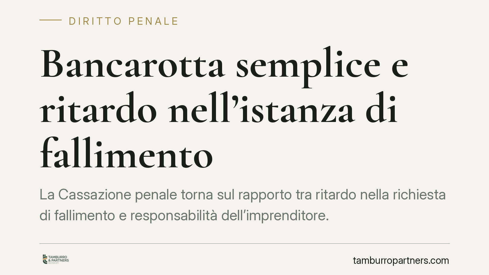

Bancarotta semplice e ritardo nell'istanza di fallimento
La Cassazione penale torna sul rapporto tra ritardo nella richiesta di fallimento e responsabilità dell'imprenditore. Quando l'omessa o tardiva iniziativa aggrava il dissesto, può configurarsi la bancarotta semplice. Un tema che riguarda amministratori e imprenditori chiamati a valutare per tempo lo stato di crisi e le conseguenze delle scelte gestorie compiute o rinviate.

Il caso
La vicenda ruota attorno a un tema ricorrente nella prassi: l'imprenditore che, pur in presenza di uno stato di insolvenza conclamato, ritarda la presentazione dell'istanza di fallimento (oggi liquidazione giudiziale). Nel frattempo l'attività prosegue, i debiti aumentano e il passivo si aggrava.
La Corte ha ribadito che tale condotta, quando produce un peggioramento apprezzabile del dissesto, può rilevare penalmente sotto il profilo della bancarotta semplice.
Nota sulla fonte. L'estremo esatto della pronuncia (Sezione, numero e data di deposito) va verificato prima della pubblicazione. Il principio qui esposto riflette un orientamento consolidato della giurisprudenza di legittimità in materia di art. 217 L.F., a prescindere dalla singola sentenza.
Inquadramento normativo
L'art. 217 della Legge Fallimentare (R.D. 267/1942) disciplina la bancarotta semplice. Al primo comma, n. 4, punisce l'imprenditore che ha aggravato il proprio dissesto astenendosi dal richiedere la dichiarazione del proprio fallimento o con altra grave colpa.
La distinzione con la bancarotta fraudolenta (art. 216 L.F.) è netta. Quest'ultima richiede condotte di distrazione, occultamento o dissipazione dei beni, con dolo specifico o generico di danno ai creditori. La bancarotta semplice, invece, sanziona comportamenti meno gravi sul piano dell'offesa: imprudenze gestorie, spese eccessive, inosservanza degli obblighi contabili, ritardo nell'iniziativa fallimentare.
Sull'elemento soggettivo occorre una precisazione. L'art. 217 L.F. è punibile sia a titolo di dolo generico sia a titolo di colpa, a seconda dell'ipotesi. Il ritardo nella richiesta di fallimento che aggrava il dissesto (co. 1, n. 4) rientra nelle condotte punibili anche per grave colpa: non serve la volontà di danneggiare i creditori, è sufficiente la negligenza qualificata nell'aver rinviato un'iniziativa doverosa.
Elemento centrale resta il nesso causale: non basta il ritardo in sé. Occorre dimostrare che proprio quel ritardo abbia determinato un aggravamento concreto e misurabile del dissesto. Un'attività proseguita in perdita, con nuovi debiti contratti in assenza di prospettive di risanamento, è l'esempio tipico.
Sul piano sistematico, l'impianto della bancarotta semplice è stato trasfuso, con adattamenti, nel Codice della crisi d'impresa e dell'insolvenza (D.Lgs. 14/2019), che ha sostituito la nozione di fallimento con quella di liquidazione giudiziale e rafforzato gli obblighi di rilevazione tempestiva della crisi.
Implicazioni pratiche
Per l'imprenditore e per l'amministratore la conseguenza è diretta: la valutazione dello stato di crisi non è più una scelta discrezionale rinviabile senza rischi.
Proseguire l'attività quando l'insolvenza è già manifesta, contraendo nuovi debiti, espone a una responsabilità penale che prescinde dall'intento fraudolento. Rileva l'omissione di una condotta doverosa e la sua incidenza causale sul passivo.
Il Codice della crisi ha reso il tema ancora più stringente, introducendo obblighi di monitoraggio continuo e strumenti di allerta. Il momento in cui gli indici segnalano la crisi diventa quindi decisivo anche in prospettiva penale: da lì in avanti ogni scelta gestoria è potenzialmente valutabile.
Cosa fare in concreto
- Monitorate gli indici di crisi previsti dal Codice della crisi: sostenibilità del debito, adeguatezza dei flussi di cassa, ritardi nei pagamenti a fornitori, dipendenti ed erario.
- Documentate ogni valutazione gestoria compiuta nella fase di difficoltà: verbali, analisi finanziarie e pareri consentono di ricostruire le ragioni delle decisioni assunte.
- Verificate le prospettive di continuità aziendale prima di contrarre nuovi debiti: la prosecuzione dell'attività va sostenuta da un piano credibile, non da un rinvio indefinito.
- Attivate per tempo gli strumenti di composizione della crisi, valutando la composizione negoziata quando ricorrono i presupposti.
- Conservate la contabilità in modo ordinato e completo: la sua tenuta regolare è essa stessa oggetto di tutela penale ed elemento di ricostruzione delle scelte.
Conclusione
La tempestività nell'affrontare la crisi non è solo buona gestione: è un presidio rispetto a un rischio penale concreto. La tempestività dell'assistenza tecnico-legale nella fase iniziale della crisi incide sulla ricostruzione delle scelte gestorie e sulla valutazione della loro incidenza sul dissesto.
---
*Contributo informativo a cura di Tamburro & Partners - Avv. Giuseppe Tamburro. Non costituisce parere legale.*
Ogni condominio ha una storia a sé.
Se gestisci un'amministrazione e vuoi un confronto su una specifica questione condominiale, scrivi allo studio. Ti rispondiamo entro un giorno lavorativo.